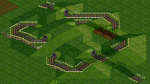

With revision r10437 peter1138 added a new feature to the trunk of OpenTTD: Automatic signal completion. What does that mean in detail? I did a few tests and created a wiki page to show you how the newest feature of OpenTTD works and how you can use it. One thing is for sure, it makes the life of OpenTTD-Players (and Co-Ops) a lot of easier. I needed one second to signal this weird construction in the screenshot. Imagine massive Mainlines you can signal them in seconds now. Just wonderful.
Signalling & Automatic Signalling
Enjoy this great new feature of OpenTTD

Dark_Link July 5, 2007 14:28
YAY \o/
Awsome news!
davil July 5, 2007 19:10
OMG is it already December? This looks like Christmas…
Gamer July 5, 2007 19:56
This is heaven!
Mucht July 6, 2007 10:44
As you can see this is a great thing to mainlines BUT its still needed to manually correct tunnel entrances, switches, bridges since the signals are not placed right after or before such constructs…
Altaree July 6, 2007 12:23
That the openTTD website REALLY needs to archive the change logs.
Altaree July 6, 2007 12:33
OMG! This will change how tracks get built. I have avoided doing turns sometimes just to avoid having to do little signal drags. WOW!
Rippsy July 13, 2007 11:51
Now thats what I call an update with superb function.
Definitly in the same boat as Altaree – superb new feature!
Might even have to start playing the nightlies just so I can enjoy this!